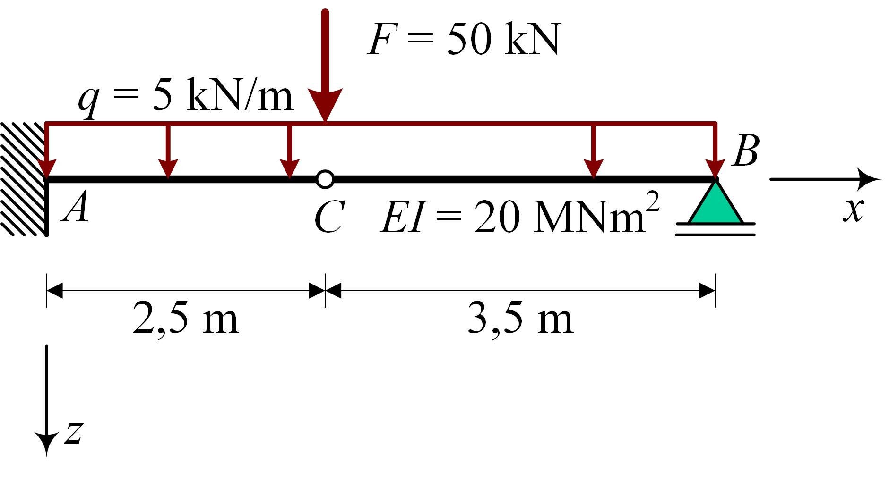
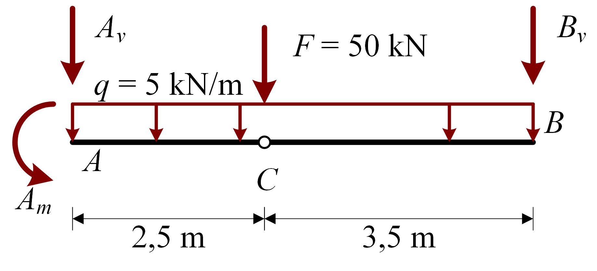
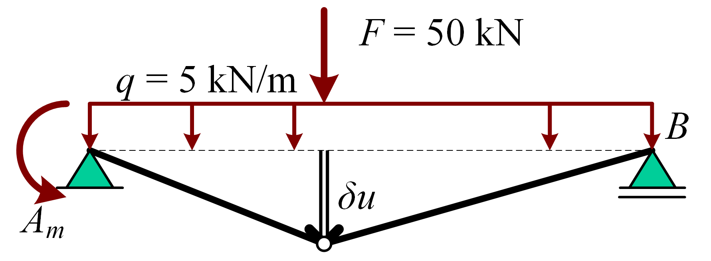
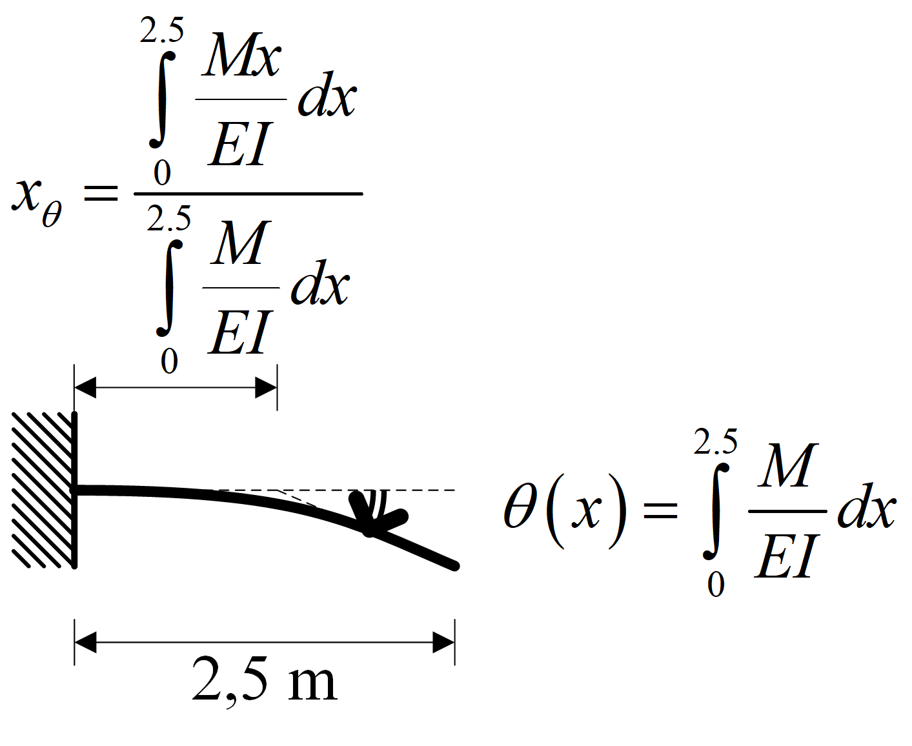
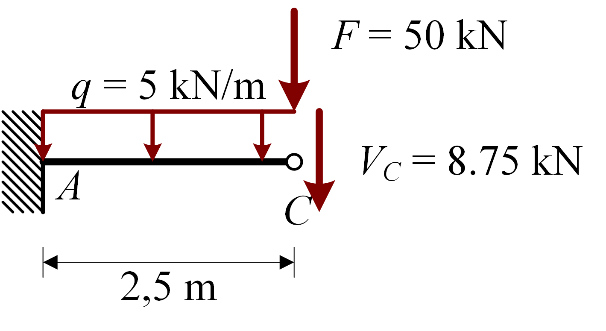
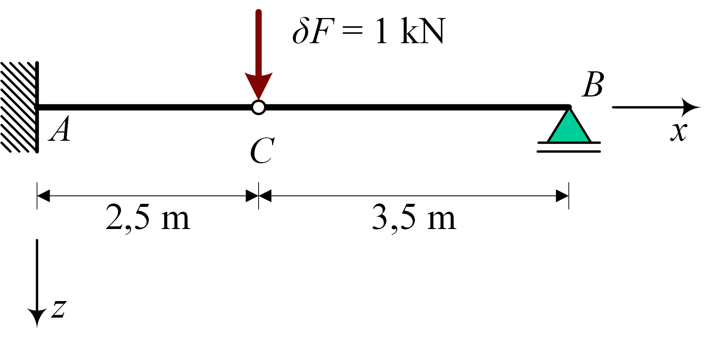
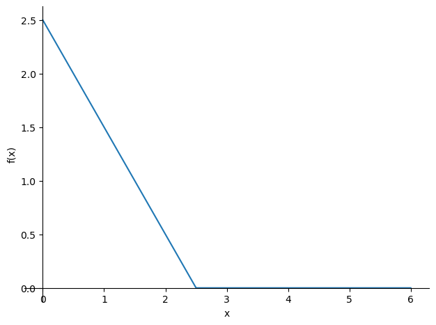

Vergelijking oplosmethodes
Contents
Vergelijking oplosmethodes#

import sympy as sp
Krachten#
Differentiaalvergelijking#
\[q(x)= Am{\left\langle x \right\rangle ^{ - 2}} + Av{\left\langle x \right\rangle ^{ - 1}} + Bv{\left\langle {x - 6} \right\rangle ^{ - 1}} + F{\left\langle {x - 2.5} \right\rangle ^{ - 1}} + {q_0}\]
\[\eqalign{
& V\left( x \right) = - \int {q\left( x \right)dx} \cr
& M\left( x \right) = \int {V\left( x \right)dx} \cr
& M\left( 6 \right) = 0 \cr
& M\left( {2.5} \right) = 0 \cr} \]
x, q0, F= sp.symbols('x, q0, F')
q = q0 + sp.SingularityFunction(x,2.5,-1)*F
C1, C2 = sp.symbols('C1, C2')
V = -sp.integrate(q,x) + C1
M = sp.integrate(V,x) + C2
eq1 = sp.Eq(M.subs(x,6),0)
eq2 = sp.Eq(M.subs(x,2.5),0)
display(eq1)
display(eq2)
sol = sp.solve((eq1,eq2),(C1,C2))
display(sol)
M_sol = M.subs(sol)
M_subs = M_sol.subs(((F,50),(q0,5)))
A_m_1 = M_subs.subs(x,0)
M_subs_piecewise = sp.simplify(M_subs.rewrite(sp.Piecewise))
display(M_subs_piecewise)
display(A_m_1)
\[\displaystyle 6 C_{1} + C_{2} - 3.5 F - 18 q_{0} = 0\]
\[\displaystyle 2.5 C_{1} + C_{2} - 3.125 q_{0} = 0\]
{C1: F + 4.25*q0, C2: -2.5*F - 7.5*q0}
\[\begin{split}\displaystyle \begin{cases} - 2.5 x^{2} + 21.25 x - 37.5 & \text{for}\: x > 2.5 \\- 2.5 x^{2} + 71.25 x - 162.5 & \text{otherwise} \end{cases}\end{split}\]
\[\displaystyle -162.5\]
Evenwichtsvergelijkingen#
 $\(\sum M_C : - Am - 2.5 Av - 3.125 q_{0} = 0 \)\( \)\(\sum F_v : - Av - Bv - F - 6 q_{0} = 0 \)\( \)\(\sum M_B : - Am - 6 Av - 3.5 F - 18 q_{0} = 0\)$
Am, Av, Bv= sp.symbols('Am Av Bv')
q = sp.SingularityFunction(x,0,-2)*Am + sp.SingularityFunction(x,0,-1)*Av + q0 + sp.SingularityFunction(x,2.5,-1)*F + sp.SingularityFunction(x,6,-1)*Bv
display(q)
V = -sp.integrate(q,x)
M = sp.integrate(V,x)
eq3 = sp.Eq(M.subs(x,2.5),0)
eq4 = sp.Eq(V.subs(x,6),0)
eq5 = sp.Eq(M.subs(x,6),0)
display(eq3)
display(eq4)
display(eq5)
sol2 = sp.solve((eq3,eq4,eq5),(Am,Av,Bv))
display(sol2)
A_m_2 = sol2[Am].subs(((F,50),(q0,5)))
display(A_m_2)
\[\displaystyle Am {\left\langle x \right\rangle}^{-2} + Av {\left\langle x \right\rangle}^{-1} + Bv {\left\langle x - 6 \right\rangle}^{-1} + F {\left\langle x - 2.5 \right\rangle}^{-1} + q_{0}\]
\[\displaystyle - Am - 2.5 Av - 3.125 q_{0} = 0\]
\[\displaystyle - Av - Bv - F - 6 q_{0} = 0\]
\[\displaystyle - Am - 6 Av - 3.5 F - 18 q_{0} = 0\]
{Am: 2.5*F + 7.5*q0, Av: -F - 4.25*q0, Bv: -1.75*q0}
\[\displaystyle 162.5\]
Virtuele arbeidmethode / virtuele verplaatsingenmethode#
 $\(\delta A = 0 : \frac{A_m\delta u}{2.5} = 50\delta u+5\cdot2.5\cdot\frac{1}{2}\delta u+5\cdot3.5\cdot \frac{1}{2}\delta u\)$
A_m_3 = 2.5*(50+5*2.5*0.5+5*3.5*0.5)
display(A_m_3)
162.5
Verplaatsingen#
M_sol = M.subs(sol2)
M_subs = M_sol.subs(((F,50),(q0,5)))
M_sol_piecewise = sp.simplify(M_sol.rewrite(sp.Piecewise))
display(M_sol_piecewise)
M_subs_piecewise = sp.simplify(M_subs.rewrite(sp.Piecewise))
display(M_subs_piecewise)
\[\begin{split}\displaystyle \begin{cases} q_{0} \left(- 0.5 x^{2} + 6.0 x - 18.0\right) & \text{for}\: x > 6 \\q_{0} \left(- 0.5 x^{2} + 4.25 x - 7.5\right) & \text{for}\: x > 2.5 \\- 2.5 F - \frac{q_{0} x^{2}}{2} - 7.5 q_{0} + x \left(F + 4.25 q_{0}\right) & \text{for}\: x > 0 \\- \frac{q_{0} x^{2}}{2} & \text{otherwise} \end{cases}\end{split}\]
\[\begin{split}\displaystyle \begin{cases} - 2.5 x^{2} + 30.0 x - 90.0 & \text{for}\: x > 6 \\- 2.5 x^{2} + 21.25 x - 37.5 & \text{for}\: x > 2.5 \\- 2.5 x^{2} + 71.25 x - 162.5 & \text{for}\: x > 0 \\- \frac{5 x^{2}}{2} & \text{otherwise} \end{cases}\end{split}\]
Differentiaalvergelijking#
\[\begin{split}\eqalign{
& M\left( x \right) = \begin{cases} - 2.5 x^{2} + 21.25 x - 37.5 & \text{for}\: x > 2.5 \\- 2.5 x^{2} + 71.25 x - 162.5 & \text{for}\: x > 0 \end{cases} \cr
& \kappa = {M \over {EI}} \cr
& \varphi = \int {\kappa dx} + {C_4}{\left\langle {x - 2.5} \right\rangle ^0} \cr
& w = - \int {\varphi dx} \cr
& w\left( 0 \right) = 0 \cr
& \varphi \left( 0 \right) = 0 \cr
& w\left( 6 \right) = 6 \cr} \end{split}\]
C3,C4,C5 = sp.symbols('C3, C4, C5')
kappa = M_sol / 2e4
phi = sp.integrate(kappa,x)+C3 + C4 * sp.SingularityFunction(x,2.5,0)
w = -sp.integrate(phi,x)+C5
eq6 = sp.Eq(phi.subs(x,0),0)
eq7 = sp.Eq(w.subs(x,0),0)
eq8 = sp.Eq(w.subs(x,6),0)
display(eq6)
display(eq7)
display(eq8)
sol3 = sp.solve((eq6,eq7,eq8),(C3,C4,C5))
display(sol3)
w_sol = w.subs(sol3)
w_subs = w_sol.subs(((F,50),(q0,5)))
w_subs_piecewise = sp.simplify(w_subs.rewrite(sp.Piecewise))
w_C_1 = w_subs.subs(x,2.5)
display(w_subs_piecewise)
display(w_C_1)
\[\displaystyle C_{3} = 0\]
\[\displaystyle C_{5} = 0\]
\[\displaystyle - 6 C_{3} - 3.5 C_{4} + C_{5} + 0.000807291666666667 F + 0.0018 q_{0} = 0\]
{C3: 0.0, C4: 0.000230654761904762*F + 0.000514285714285714*q0, C5: 0.0}
\[\begin{split}\displaystyle \begin{cases} 1.04166666666667 \cdot 10^{-5} x^{4} - 0.00025 x^{3} + 0.00225 x^{2} - 0.0141666666666667 x + 0.0445 & \text{for}\: x > 6 \\1.04166666666667 \cdot 10^{-5} x^{4} - 0.000177083333333333 x^{3} + 0.0009375 x^{2} - 0.00629166666666667 x + 0.02875 & \text{for}\: x > 2.5 \\x^{2} \cdot \left(1.04166666666667 \cdot 10^{-5} x^{2} - 0.00059375 x + 0.0040625\right) & \text{for}\: x > 0 \\1.04166666666667 \cdot 10^{-5} x^{4} & \text{otherwise} \end{cases}\end{split}\]
\[\displaystyle 0.0165201822916667\]
Momentenvlakstelling#

M_EI = M_sol_piecewise.args[2][0]/2e4
M_EI_subs = M_EI.subs([(F,50),(q0,5)])
display(M_EI_subs)
theta = sp.integrate(M_EI_subs,(x,0,2.5))
print("θ=",theta)
x_theta = sp.integrate(M_EI_subs*x,(x,0,2.5))/theta
print("x_θ=",x_theta)
w_C_5 = abs(theta)*(2.5-x_theta)
print("w_C=",w_C_5)
\[\displaystyle - 0.000125 x^{2} + 0.0035625 x - 0.008125\]
θ= -0.00983072916666667
x_θ= 0.819536423841060
w_C= 0.0165201822916667
Vergeet-me-nietjes#

\[{w_C} = {{q{l^4}} \over {8EI}} + {{F{l^3}} \over {3EI}}\]
w_C_4 = 5 * 2.5 **4 / (8 * 2e4) + (50+8.75)*2.5**3/(3*2e4)
print(w_C_4)
0.016520182291666664
Virtuele krachtenmethode / Castigliano#
\[ \text{Virtuele krachtenmethode} \]
\[\begin{split} M\left( x \right) = \begin{cases} - 2.5 x^{2} + 21.25 x - 37.5 & \text{for}\: x > 2.5 \\- 2.5 x^{2} + 71.25 x - 162.5 & \text{for}\: x > 0 \end{cases} \end{split}\]
\[m(x):\]

\[\eqalign{
& m\left( x \right) = \left\{ {\matrix{
0 \hfill & {{\rm{for}}\>x > 2.5} \hfill \cr
{x - 2.5} \hfill & {{\rm{for}}\>x > 0} \hfill \cr
0 \hfill & {{\rm{otherwise}}} \hfill \cr } } \right. \cr}\]
\[ \text{Castigliano} \]
\[ M\left( x, F, q_0 \right) = \left\{ {\matrix{
{{q_0}\left( { - 0.5{x^2} + 4.25x - 7.5} \right)} & {{\rm{for}}\>x > 2.5} \cr
{ - 2.5F - {{{q_0}{x^2}} \over 2} - 7.5{q_0} + x\left( {F + 4.25{q_0}} \right)} & {{\rm{for}}\>x > 0} \cr } } \right. \]
\[{{\partial M\left( x, F, q_0 \right)} \over {\partial F}} = \left\{ {\matrix{
0 & {{\rm{for}}\>x > 2.5} \cr
{x - 2.5} & {{\rm{for}}\>x > 0} \cr } } \right. \]
\[ {w_C} = \int_0^{2.5} {{{\partial M\left( x, F, q_0 \right)} \over {\partial F}}}{{M\left( x, F, q_0 \right)} \over {2 EI}} dx = \int_0^{2.5} {{{ m(x) M(x) } \over {2 EI}}} dx \]
\[ \text{Virtuele krachtenmethode & Castigliano} \]
\[ w_C = \int_0^{2.5} {{{\left( {x - 2.5} \right)\left( { - 2.5{x^2} + 71.25x - 162.5} \right)} \over {2 \cdot {{10}^4}}}} dx\]
deltaF = sp.symbols('deltaF')
deltaq = sp.SingularityFunction(x,0,-2)*Am + sp.SingularityFunction(x,0,-1)*Av + sp.SingularityFunction(x,2.5,-1)*deltaF + sp.SingularityFunction(x,6,-1)*Bv
deltaV = -sp.integrate(deltaq,x)
deltaM = sp.integrate(deltaV,x)
eq9 = sp.Eq(deltaM.subs(x,2.5),0)
eq10 = sp.Eq(deltaV.subs(x,6),0)
eq11 = sp.Eq(deltaM.subs(x,6),0)
deltasol = sp.solve((eq9,eq10,eq11),(Am,Av,Bv))
deltaM_sol = deltaM.subs(deltasol)
deltaM_subs = deltaM_sol.subs(deltaF,1)
sp.plot(-deltaM_subs,(x,0,6))
deltaM_sol_piecewise = sp.simplify(deltaM_sol.rewrite(sp.Piecewise))
display(deltaM_sol_piecewise)
deltaM_subs_piecewise = sp.simplify(deltaM_subs.rewrite(sp.Piecewise))
display(deltaM_subs_piecewise)

\[\begin{split}\displaystyle \begin{cases} 0 & \text{for}\: x > 2.5 \\deltaF \left(x - 2.5\right) & \text{for}\: x > 0 \\0 & \text{otherwise} \end{cases}\end{split}\]
\[\begin{split}\displaystyle \begin{cases} 0 & \text{for}\: x > 2.5 \\x - 2.5 & \text{for}\: x > 0 \\0 & \text{otherwise} \end{cases}\end{split}\]
w_C_2 = sp.integrate(deltaM_subs_piecewise.args[1][0]*M_subs_piecewise.args[2][0],(x,0,2.5)) / 2e4
display(w_C_2)
\[\displaystyle 0.0165201822916667\]
w_C_3 = sp.integrate(M_sol_piecewise.args[2][0]*M_sol_piecewise.args[2][0].diff(F),(x,0,2.5))/2e4
display(w_C_3.subs(((F,50),(q0,5))))
\[\displaystyle 0.0165201822916667\]
Potentiële energie#
\[\eqalign{
& {w_1} = {a_1}{x^4} + {a_2}{x^3} + {a_3}{x^2} + {a_4}x + {a_5} & {\rm{for 0}} \le x \le 2.5 \cr
& {w_2} = {b_1}{x^4} + {b_2}{x^3} + {b_3}{x^2} + {b_4}x + {b_5} & {\rm{for 2}}{\rm{.5}} \le x \le 6 \cr
& \left. \matrix{
{w_1}\left( 0 \right) = 0 \hfill \cr
{\varphi _1}\left( 0 \right) = 0 \hfill \cr
{w_1}\left( {2.5} \right) = {w_2}\left( {2.5} \right) \hfill \cr
{w_2}\left( 6 \right) = 0 \hfill \cr} \right\} \to {a_4},{a_5},{b_4},{b_5} \cr
& \kappa = - {{{d^2}w} \over {d{x^2}}} \cr
& V = \int_0^6 {{{EI{\kappa ^2}} \over 2}} dx - 50 \cdot w\left( {2.5} \right) - \int_0^6 {q \cdot w\left( x \right)} dx \cr
& \left. \matrix{
{{\partial V} \over {\partial {a_1}}} = 0 \hfill \cr
{{\partial V} \over {\partial {a_2}}} = 0 \hfill \cr
{{\partial V} \over {\partial {a_3}}} = 0 \hfill \cr
{{\partial V} \over {\partial {b_1}}} = 0 \hfill \cr
{{\partial V} \over {\partial {b_2}}} = 0 \hfill \cr
{{\partial V} \over {\partial {b_3}}} = 0 \hfill \cr} \right\} \to {a_1},{a_2},{a_3},{b_1},{b_2},{b_3} \cr} \]
a1, a2, a3, a4, a5, b1, b2, b3, b4, b5, x = sp.symbols('a1 a2 a3 a4 a5 b1 b2 b3 b4 b5 x')
w1 = a1 * x **4 + a2 * x **3 + a3 * x **2 + a4 * x + a5
w2 = b1 * x **4 + b2 * x **3 + b3 * x **2 + b4 * x + b5
phi1 = -w1.diff(x)
phi2 = -w2.diff(x)
eq1 = sp.Eq(w1.subs(x,0),0)
eq2 = sp.Eq(phi1.subs(x,0),0)
eq3 = sp.Eq(w1.subs(x,2.5),w2.subs(x,2.5))
eq4 = sp.Eq(w2.subs(x,6),0)
sol = sp.solve((eq1,eq2,eq3,eq4),(a4,a5,b4,b5))
display(sol)
w1 = w1.subs(sol)
w2 = w2.subs(sol)
V = 2e4/2*(sp.integrate((-w1.diff(x,2))**2,(x,0,2.5))+sp.integrate((-w2.diff(x,2))**2,(x,2.5,6)) ) - 50 * w1.subs(x,2.5) - sp.integrate(5 * w1,(x,0,2.5))- sp.integrate(5 * w2,(x,2.5,6))
display(V)
eq5 = sp.Eq(V.diff(a1) ,0)
eq6 = sp.Eq(V.diff(a2) ,0)
eq7 = sp.Eq(V.diff(a3) ,0)
eq8 = sp.Eq(V.diff(b1) ,0)
eq9 = sp.Eq(V.diff(b2) ,0)
eq10 = sp.Eq(V.diff(b3) ,0)
sol = sp.solve((eq5,eq6,eq7,eq8,eq9,eq10),(a1,a2,a3,b1,b2,b3))
display(sol)
w1_sol=w1.subs(sol)
w2_sol=w2.subs(sol)
display(w1_sol.subs(x,2.5))
{a4: 0.0,
a5: 0.0,
b4: -11.1607142857143*a1 - 4.46428571428571*a2 - 1.78571428571429*a3 - 359.125*b1 - 57.25*b2 - 8.5*b3,
b5: 66.9642857142857*a1 + 26.7857142857143*a2 + 10.7142857142857*a3 + 858.75*b1 + 127.5*b2 + 15.0*b3}
\[\displaystyle 28125000.0 a_{1}^{2} + 14062500.0 a_{1} a_{2} + 2500000.0 a_{1} a_{3} - 2392.578125 a_{1} + 1875000.0 a_{2}^{2} + 750000.0 a_{2} a_{3} - 966.796875 a_{2} + 100000.0 a_{3}^{2} - 393.229166666667 a_{3} + 2211363000.0 b_{1}^{2} + 452497500.0 b_{1} b_{2} + 32060000.0 b_{1} b_{3} + 4003.453125 b_{1} + 24045000.0 b_{2}^{2} + 3570000.0 b_{2} b_{3} + 455.546875 b_{2} + 140000.0 b_{3}^{2} + 35.7291666666667 b_{3}\]
{a1: 1.04166666666680e-5,
a2: -0.000593750000000008,
a3: 0.00406250000000001,
b1: 1.04166666666667e-5,
b2: -0.000177083333333333,
b3: 0.000937500000000000}
\[\displaystyle 0.0165201822916667\]